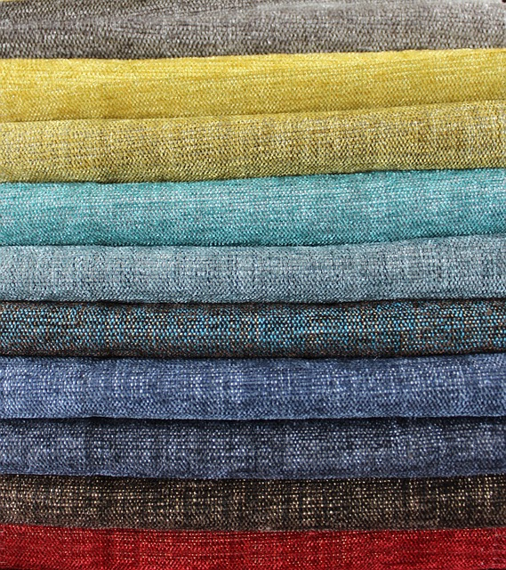
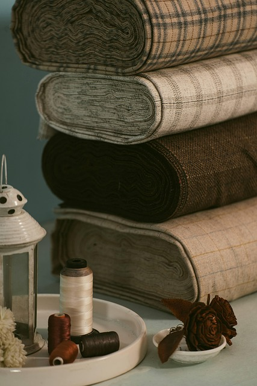
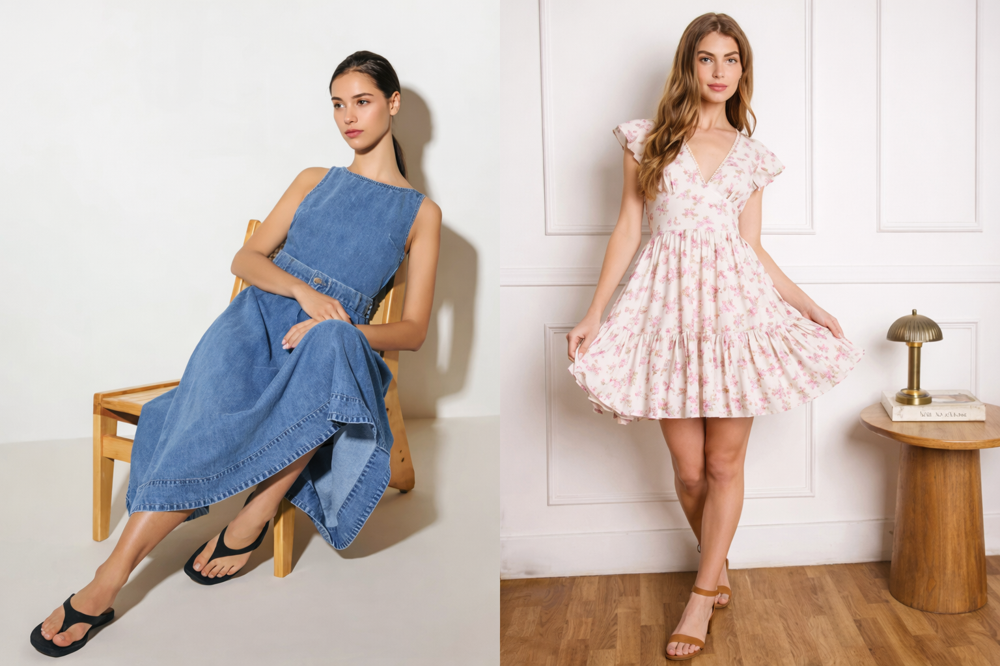
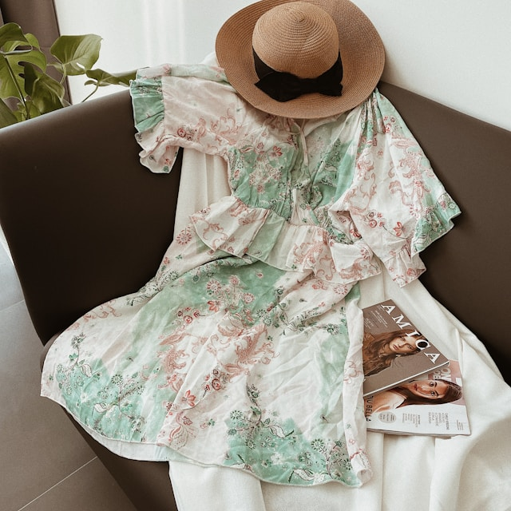

Summer Editorial
A visual guide to fabrics, silhouettes, climates, and moments — styled for comfort and beauty all summer long.
A true summer dress combines comfort, elegance, and versatility — designed to move with you through warm days and breezy nights.
Choosing the right fabric can transform how a summer dress looks, feels, and performs throughout the day.

A summer essential known for its softness, breathability, and skin-friendly feel.
Cotton dresses absorb moisture, allow airflow, and stay comfortable during long, sun-filled days — making them ideal for casual outings, travel, and everyday wear.
Naturally airy and textured, linen is designed for high heat and humidity.
Linen dresses dry quickly, feel cool against the skin, and develop a relaxed elegance over time — perfect for beach days, resort wear, and warm-weather styling.

Smooth, lightweight fabrics with a fluid drape that enhances movement.
Ideal for maxi dresses and evening styles, viscose blends offer breathability with a polished finish — transitioning effortlessly from daytime comfort to evening elegance.
Summer heat feels different depending on humidity. Discover dress styles and fabrics designed to keep you comfortable in every climate.
Breathable materials like cotton, linen, and bamboo blends absorb moisture and allow airflow, keeping summer dresses light and fresh in high humidity.
Loose silhouettes, A-line shapes, and relaxed midi or maxi dresses prevent cling and allow heat to escape throughout the day.
Tight-fitting styles and heavy synthetics trap humidity and reduce comfort, making dresses feel heavier in warm conditions.

Summer style is less about trends and more about how a dress makes you feel throughout the day. The most memorable summer looks are rooted in ease — silhouettes that breathe, fabrics that move, and designs that never feel restrictive.
From relaxed daytime moments to softly styled evenings, a well-chosen summer dress adapts naturally. It doesn’t demand attention — it earns it through balance, proportion, and thoughtful simplicity.
Summer dressing often moves from bright midday heat to cool evening breezes. The right dress adapts effortlessly from day plans to evening moments.

Day dresses are designed for comfort, breathability, and ease of movement. Lightweight fabrics like cotton, linen, and soft blends help regulate heat while keeping you fresh during long summer days.
Ideal for casual outings, travel, shopping, or brunch, daytime dresses often feature relaxed silhouettes, sleeveless designs, and lighter colors that reflect sunlight and enhance all-day wearability.